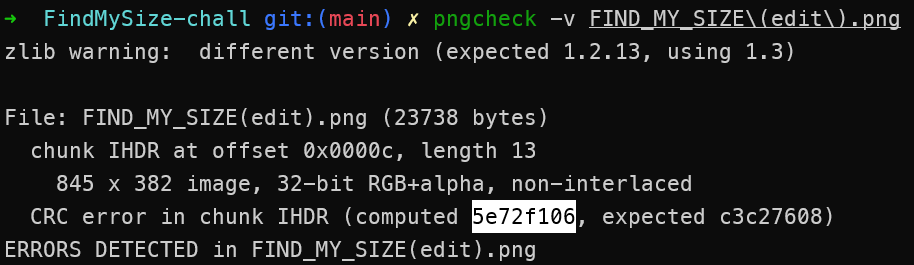
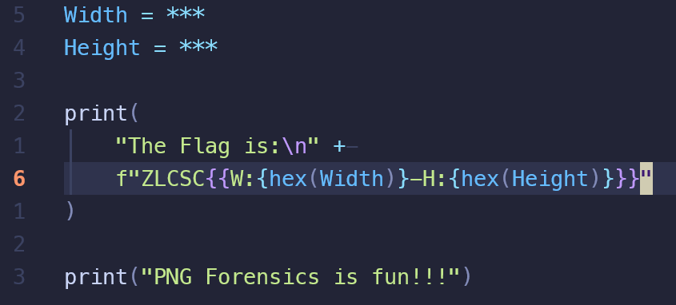

Find My Size Official Writeup
題目資訊
- Challenge Repo: r3xdj/FindMySize-chall
Writeup
FIND MY SIZE
分類：Forensics
難度：Medium
我收到一個奇怪的檔案，你可以幫我看看這是怎麼回事嗎？
題目給了一個png圖片檔案。

很顯然的這張圖片的長、寬被改掉了。因此我們首要之務是找回原本正確的長、寬，並將檔案修復。
IHDR數據塊
每一個png檔案，都以89 50 4E 47 0D 0A 1A 0A開始，隨後由若干個數據塊所組成。數據塊分為以下幾種：(取自參考資料1.PNG - CTF Wiki)
| 數據塊符號 | 數據塊名稱 | 多數據塊 | 可選否 | 位置限制 |
|---|---|---|---|---|
| IHDR | 文件頭數據塊 | 否 | 否 | 第一塊 |
| cHRM | 基色和白色點數據塊 | 否 | 是 | 在 PLTE 和 IDAT 之前 |
| gAMA | 圖像γ數據塊 | 否 | 是 | 在 PLTE 和 IDAT 之前 |
| sBIT | 樣本有效位數據塊 | 否 | 是 | 在 PLTE 和 IDAT 之前 |
| PLTE | 調色板數據塊 | 否 | 是 | 在 IDAT 之前 |
| bKGD | 背景顏色數據塊 | 否 | 是 | 在 PLTE 之後 IDAT 之前 |
| hIST | 圖像直方圖數據塊 | 否 | 是 | 在 PLTE 之後 IDAT 之前 |
| tRNS | 圖像透明數據塊 | 否 | 是 | 在 PLTE 之後 IDAT 之前 |
| oFFs | （專用公共數據塊） | 否 | 是 | 在 IDAT 之前 |
| pHYs | 物理像素尺寸數據塊 | 否 | 是 | 在 IDAT 之前 |
| sCAL | （專用公共數據塊） | 否 | 是 | 在 IDAT 之前 |
| IDAT | 圖像數據塊 | 是 | 否 | 與其他 IDAT 連續 |
| tIME | 圖像最後修改時間數據塊 | 否 | 是 | 無限制 |
| tEXt | 文本信息數據塊 | 是 | 是 | 無限制 |
| zTXt | 壓縮文本數據塊 | 是 | 是 | 無限制 |
| fRAc | （專用公共數據塊） | 是 | 是 | 無限制 |
| gIFg | （專用公共數據塊） | 是 | 是 | 無限制 |
| gIFt | （專用公共數據塊） | 是 | 是 | 無限制 |
| gIFx | （專用公共數據塊） | 是 | 是 | 無限制 |
| IEND | 圖像結束數據 | 否 | 否 | 最後一個數據塊 |
而每個數據塊又由4個部分組成(取自參考資料1.PNG - CTF Wiki)：
| 名稱 | 字節數 | 說明 |
|---|---|---|
| Length（長度） | 4 bytes | 指定數據塊中數據域的長度，其長度不超過（231－1）字節 |
| Chunk Type Code（數據塊類型碼） | 4 bytes | 數據塊類型碼由 ASCII 字母（A - Z 和 a - z）組成 |
| Chunk Data（數據塊數據） | 可變長度 | 存儲按照 Chunk Type Code 指定的數據 |
| CRC（循環冗餘檢測） | 4 bytes | 存儲用來檢測是否有錯誤的循環冗餘碼 |
其中IHDR的數據塊數據(Header Chunk)由13個bytes組成，包含了這個png檔案的基本資訊，其中就包含圖片的長度、寬度。具體結構如下(擷取自參考資料2.png格式分析与压缩原理 - 一只安静的猫)：
| 名稱 | 字節數 | 說明 |
|---|---|---|
| Width | 4 bytes | 影像寬度，以像素為單位 |
| Height | 4 bytes | 影像高度，以像素為單位 |
| Bit depth | 1 byte | 图像深度 |
| ColorType | 1 byte | 顏色類型 |
| Compression method | 1 byte | 壓縮方法 |
| Filter method | 1 byte | 濾波器方法 |
| Interlace method | 1 byte | 隔行掃描方法 |
註：部分內容有精簡過，有興趣者可見參考資料2.。
我們用題目的檔案來實際看一次

-
白色框框：文件開頭的
89 50 4E 47 0D 0A 1A 0A -
黃色框框：IHDR的Length，為
0d，換成十進位也就是13，即前述IHDR的數據長度為13 bytes -
橘色框框：IHDR的Chunk Type Code，即
49 48 44 52ASCII解碼即為IHDR -
IHDR的Chunk Data
-
藍色框框：圖片寬度
-
靛色框框：圖片長度
-
-
紫色框框：CRC循環冗餘檢測
如果一個圖片的長、寬被更改了，但CRC沒改，那圖片顯示器就會發現錯誤，有些軟體就不會顯示圖片(但Windows 11內建的相片軟體會顯示)。此時，最簡單的方法便是對長、寬進行爆破，並每次自行計算CRC，看跟檔案中的CRC是否一樣，如果一樣就代表正確。

那我們該怎麼找回長、寬呢？此外，pngcheck的兩個warning是什麼意思呢？
過濾器
以下假設圖片長度為，寬度為，每個像素占個bytes，圖片數據流總共 bytes。
png的圖片數據(在IDAT裡)是一行一行儲存的，每一行的開頭都有1 byte用來指定該行的過濾器類型(Filter Type)(取值為0, 1, 2, 3, 4)，接著才是數據內容(Pixel Data)(長度為 bytes)。(詳見參考資料2.png格式分析与压缩原理 - 一只安静的猫中的5.过滤器)
註：並不是一行一個IDAT喔！
因此，我們有
所以知道就會知道，且整除。
因此此題的解法如下：
對寬度進行爆破，對於每個，可以將數據切成若干行，每行有 bytes。接著我們依序檢查是否每行的開頭第一個byte都是0, 1, 2, 3, 4的其中之一(因為過濾器類型(Filter Type)取值只能是0, 1, 2, 3, 4)。如果檢查到任一行不對，就代表這個寬度是錯誤的。
如此便能篩選出可能的，並以此算出，隨後用16進位編輯器修改，用肉眼看哪個是正確的。
我們剩下的最後一道檻是知道是多少(只要寫腳本提取出IDAT段內容看長度多少即可)，不過由前面pngcheck跑出來的結果我們知道這是一張32-bit RGB+alpha的照片，因此。
Script
撰寫Script如下：
1 | #!/usr/bin/python3 |
我操作檔案內容相關的Python不好，所以腳本基本上是Gemini生的
但腳本內容應該很好理解
執行之後輸出
1 | 可能的(寬度,高度): (0x34d, 0x17e) |
我們用任何一個16進位編輯軟體(如果你用Windows，我推薦HxD，簡單明瞭)修改長、寬，然後再pngcheck我們修改完的檔案，讓pngcheck幫我們算出正確的CRC

得到CRC為5e72f106。再次用16進位編輯器修改即可。接著我們就能得到還原後的圖片：

於是Flag就是
1 | ZLCSC{W:0x34d-H:0x17e} |
完工！
參考資料